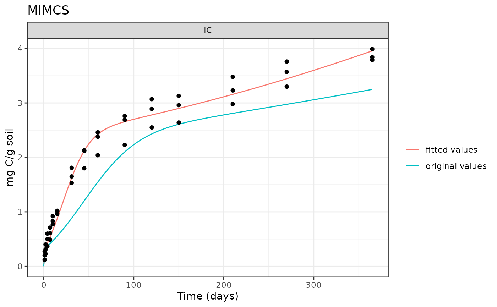

Fit model to data
Fit-to-Data.RmdThis example demonstrates how to use memc_modfit to fit
a MEMC model configuration to observational data. In this example we
will be fitting the MIMCS model to the data from CITATION
EXPERIMENT.
Setup
# This assumes that the MEMC package has already been installed.
library(MEMC)
# Used to visualize results
library(ggplot2)
theme_set(theme_bw() + theme(legend.title = element_blank()))Start by loading the comparison data, included in the package data.
Set up the the MIMCS model with different initial pool sizes to be consistent with the experiment setup.
# Save a copy of the mimics model configuration.
my_mod_config <- MEMC::MIMCS_config
# Update the MEND model initial state conditions to reflect
# the experimental setup
my_mod_config$state <- memc_incubation_ultisol$stateRun the model with the original parameter values.
original_rslts <- memc_solve(my_mod_config, time = 0:max(comp_data$time))Use memc_modfit to fit the model to the observed
data.
Description of inputs to MEMC function memc_modfit are
as follows:
- config: a MEMC model configuration object, either one of the pre-built configurations listed in memc_all_configs or created using configure_config
- comp_data: a data frame containing the comparison data that the model will be fit to
fit <- memc_modfit(config = my_mod_config,
comp_data = comp_data,
x = c(V_d = 2, V_p = 5, V_m = 0.01))
fit$par
#> V_d V_p V_m
#> 4.8977708 31.3576028 0.3833364Re run the model with the parameter values.
new_rslts <- memc_solve(my_mod_config, params = fit$par, time = 0:max(comp_data$time))
# Format into a single data table to plot
original_rslts$par <- "original values"
new_rslts$par <- "fitted values"
out <- rbind(original_rslts, new_rslts)Plot the model results vs the comparison data:
ggplot(data = out[out$variable == "IC", ]) +
geom_line(aes(time, value, color = par)) +
geom_point(data = comp_data, aes(time, IC)) +
facet_wrap("variable", scales = "free") +
labs(x = "Time (days)", y = "mg C/g soil", title = "MIMCS") 